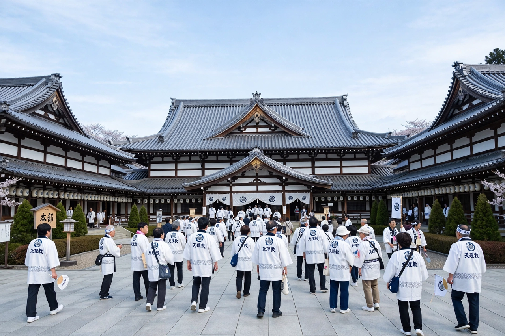

From Wikipedia, the free encyclopedia
| Tenrikyo | |
|---|---|
| Classification | Japanese new religion |
| Founder | Miki Nakayama (Oyasama) |
| Founded | 26 October 1838, Shōyashiki village, Japan |
| Headquarters | Tenri, Nara, Japan |
| Deity | Tenri-Ō-no-Mikoto (God the Parent) |
| Scriptures | Ofudesaki, Mikagura-uta, Osashizu |
| Adherents | Estimated 1–2 million |

Tenrikyo (Japanese: 天理教, "Teaching of Heavenly Reason") is a Japanese new religion founded in 1838 by the peasant woman Nakayama Miki, revered by followers as the Foundress, or Oyasama. It teaches that God the Parent, Tenri-Ō-no-Mikoto, created human beings to live the Joyous Life — a life of gratitude, mutual help and freedom from suffering — and that the site of the faith's headquarters in Tenri, Nara, is the Jiba, the place of humanity's creation. It is among the largest of the religions to emerge from the Shinto tradition, though it has been registered as a separate faith since the post-war period.
On 26 October 1838, according to Tenrikyo tradition, Nakayama Miki received a divine revelation during a ceremony performed for her son's illness, and became the Shrine of God. Over the following decades she taught the new faith in the village of Shōyashiki, granting the Sazuke (a divine healing grant), composing the sacred scriptures — the Ofudesaki ("Tip of the Writing Brush") and the Mikagura-uta songs — and living a life of exemplary poverty. She died in 1887, but followers believe she remains present at the Foundress Sanctuary, working for the salvation of humankind.
Central concepts include innen (causation or karma, the accumulated effects of past actions), the "eight dusts" of the mind (mental habits such as greed, miserliness, anger and arrogance that cloud the heart), and tanno — joyous acceptance of every circumstance as guidance from God the Parent. The goal of practice is to sweep away the dusts through self-reflection, service (hinokishin) and the Service (Tsutome), a ritual of hand movements performed to the Mikagura-uta songs, whose central form is the Kagura Service performed at the Jiba by masked dancers representing the acts of creation.
The Tenrikyo Church Headquarters in Tenri City oversees thousands of churches in Japan and missions overseas, particularly in Korea, Taiwan, Brazil, the United States and parts of Southeast Asia. Followers attend monthly services, perform morning and evening prayers with hand movements, and undertake pilgrimages to the Jiba, called ojibagaeri — "returning home". The faith has historically placed strong emphasis on charitable works, disaster relief, education (Tenri University) and medical care.